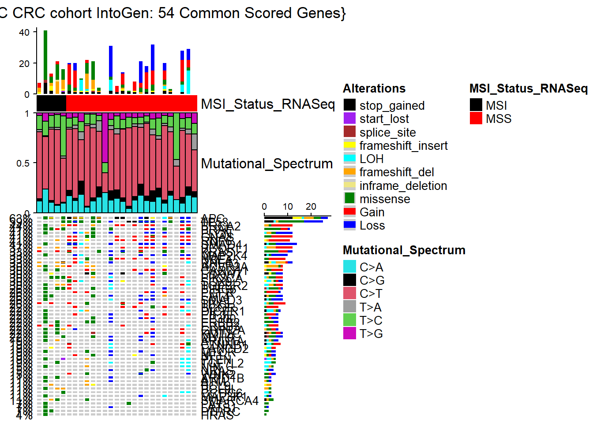
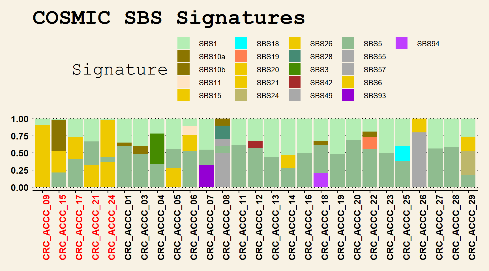
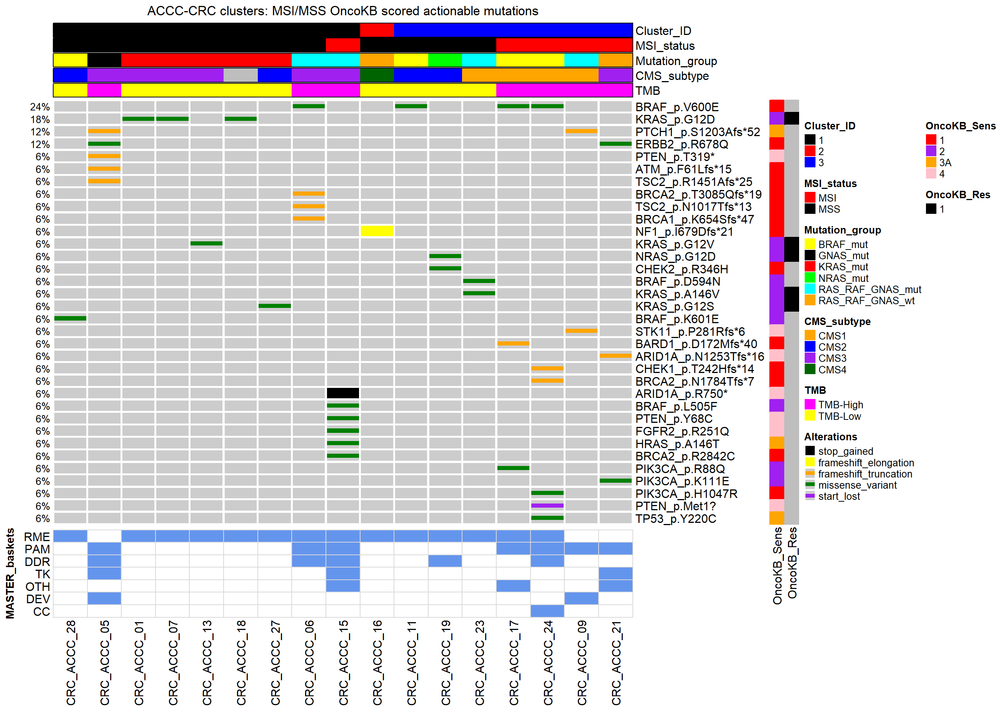

Show the code
library(ComplexHeatmap)
library(InteractiveComplexHeatmap)
library(tidyverse)
library(circlize)
library(ggthemes)
library(here)Initially start by loading the necessary R packages, along with importing the clinical information.
library(ComplexHeatmap)
library(InteractiveComplexHeatmap)
library(tidyverse)
library(circlize)
library(ggthemes)
library(here)dr_here()
# load the matrix with the 54 altered driver genes-
dt <- read_csv(here("Data","Input_Oncoplot_ACCC_CRC.csv"))
dt2 <- dt |> column_to_rownames("hugo") # here
# na= character()
mat <- dt2
mat[is.na(mat)] = ""
mat = as.matrix(mat)
# approach of total alteration frequency counting of the selected 54 genes
# keep caution for the counting process to remove any entries in the value column with NA !!
dat_count <- dt |> pivot_longer(cols=-hugo) |> filter(!is.na(value)) |>
distinct(name, hugo) |> group_by(hugo) |> count(hugo, name, sort=T) |>
count(hugo, sort=T)
pdat_updated <- read_tsv(here("Data",
"CRC.ACCC.Clinical.Total.Merged.MSI.Mut.Info.RNASeq.tsv"))
# here; just on this case we remove *manually* the CRC_ACCC_02 sample in order to project the results for the WES data {as we have collectively all clinical info for all profiled samples from both omic layers}
pdat.ord <- pdat_updated[order(pdat_updated$MSI_status, decreasing = TRUE),] |>
select(Sample_Name,MSI_status) |>
filter(!Sample_Name=="CRC_ACCC_02") |>
column_to_rownames("Sample_Name")
s.ord <- as.character(rownames(pdat.ord))
col_2 =c("missense" = "#008000", "stop_gained"="black", "splice_site"="brown",
"Gain"="red","Loss"="blue","frameshift_insert"="yellow","LOH"="#00FFFF",
"frameshift_del"="orange","inframe_deletion"="khaki2",
"start_lost"="purple")
#########################################################################################
# implement the following scheme to map alterations to distinct colors/rectangle combos!!
alter_fun_2 = list(
background = function(x, y, w, h) {
grid.rect(x, y, w-unit(0.5, "mm"), h-unit(0.5, "mm"),
gp = gpar(fill = "#CCCCCC", col = NA))
},
# black
stop_gained = function(x, y, w, h) {
grid.rect(x, y, w-unit(0.5, "mm"), h-unit(0.5, "mm"),
gp = gpar(fill = col_2["stop_gained"], col = NA))
},
# purple
start_lost = function(x, y, w, h) {
grid.rect(x, y, w-unit(0.5, "mm"), h-unit(0.5, "mm"),
gp = gpar(fill = col_2["start_lost"], col = NA))
},
# brown
splice_site = function(x, y, w, h) {
grid.rect(x, y, w-unit(0.5, "mm"), h-unit(0.5, "mm"),
gp = gpar(fill = col_2["splice_site"], col = NA))
},
# yellow
frameshift_insert = function(x, y, w, h) {
grid.rect(x, y, w-unit(0.5, "mm"), h*0.45,
gp = gpar(fill = col_2["frameshift_insert"], col = NA))
},
# cyan
LOH = function(x, y, w, h) {
grid.rect(x, y, w-unit(0.5, "mm"), h*0.5,
gp = gpar(fill = col_2["LOH"], col = NA))
},
# orange
frameshift_del = function(x, y, w, h) {
grid.rect(x, y, w-unit(0.5, "mm"), h*0.45,
gp = gpar(fill = col_2["frameshift_del"], col = NA))
},
# khaki2
inframe_deletion = function(x, y, w, h) {
grid.rect(x, y, w-unit(0.5, "mm"), h*0.4,
gp = gpar(fill = col_2["inframe_deletion"], col = NA))
},
# green
missense = function(x, y, w, h) {
grid.rect(x, y, w*0.7, h*0.8,
gp = gpar(fill = col_2["missense"], col = NA))
},
# red
Gain = function(x, y, w, h) {
grid.rect(x, y, w-unit(0.5, "mm"), h*0.5,
gp = gpar(fill = col_2["Gain"], col = NA))
},
# blue
Loss = function(x, y, w, h) {
grid.rect(x, y, w-unit(0.5, "mm"), h*0.5,
gp = gpar(fill = col_2["Loss"], col = NA))
}
)
column_title = "OncoPrint {ACCC CRC cohort IntoGen: 54 Common Scored Genes}"
##############################################################################
# also load the estimated mutational spectrum from prior analyses; also check the related Zenodo material
mut.spect.final <- read_tsv(here("Data",
"MutSpec_TypeOccurence_ACCC_FinalSamples_Oncoplot.tsv")) |>
column_to_rownames("ACCC_sample_ID") |> dplyr::select(-c(7,8))
mutSpect.scaled = t(apply(mut.spect.final, 1, function(x) x/sum(x)))
mutSpect.ord <- mutSpect.scaled[rownames(pdat.ord),]
# set the complete heatmap annotation object
ha <- HeatmapAnnotation(cbar = anno_oncoprint_barplot(),
MSI_Status_RNASeq = ifelse(pdat.ord[[1]] == 1, "MSI","MSS"),
col=list(MSI_Status_RNASeq = structure(names = c("MSI", "MSS"), c("black", "red"))),
Mutational_Spectrum = anno_barplot(mutSpect.ord,
gp = gpar(fill = c(5,1,2,8,3,6)), bar_width = 1, height = unit(3, "cm")))
lgd = Legend(title = "Mutational_Spectrum", labels = c("C>A","C>G","C>T","T>A","T>C","T>G"),
legend_gp = gpar(fill = c(5,1,2,8,3,6)))
mat2 <- mat[dat_count$hugo,rownames(pdat.ord)]
# set the final oncoplot
ht = oncoPrint(mat2,alter_fun = alter_fun_2, col = col_2, top_annotation = ha,
row_order = dat_count$hugo, column_names_gp = gpar(fontsize = 7),
column_title = column_title, column_order=s.ord,
remove_empty_columns = FALSE)
draw(ht, heatmap_legend_list = lgd)
sig.contrib <- read_csv(here("Data","Signature_contributions_ACCC.csv"))
sig.contrib <- sig.contrib |> select(-Proposed_Etiology) |> pivot_longer(cols=-Signature)
# use the imported clinical information object from above chunk
clin.dat <- pdat_updated |>
select(Sample_Name, MSI_status)
msi_accc <- as.character(clin.dat$MSI_status)
msi_accc_upd <- recode(msi_accc, "0" = "MSS", "1" = "MSI")
clin.dat$MSI_status <- msi_accc_upd
xx.1 <- left_join(x=sig.contrib, y=clin.dat, by=c("name"="Sample_Name"))
xx.1 <- xx.1 |> arrange(MSI_status)
## how to *manually* group respectively the assigned COSMIC SBS signatures (https://cancer.sanger.ac.uk/signatures/sbs/)::
## SBS6, SBS20, SBS21, SBS26 and SBS15 -> MSI -> one color
## SBS1 + SBS5 -> keep them as separate signatures but use similar colors to show common-partial-etiologies -> clock-like association (mainly because the etiologies are different although both associate with age)
## SBS10 a + b -> Group together
## SBS93 + SBS94 since the etiology is unknown (and probably different) -> separate but similar C;
## check this-below is the most optimal with ordering and color specification:
xx.2 <- xx.1 |> distinct(name,MSI_status)
a <- a <- ifelse(xx.2$MSI_status == "MSS", "black", "red") # this to also separate-order samples with MSI/MSS samples
# This might differ slightly from the original supplementary figure, as here to enhance differences and improve explainability, samples are also colored + ordered based on MSI status;
ggplot(xx.1, aes(fill=Signature, y=value, x=factor(name,
levels=c("CRC_ACCC_09","CRC_ACCC_15","CRC_ACCC_17","CRC_ACCC_21","CRC_ACCC_24","CRC_ACCC_01",
"CRC_ACCC_03","CRC_ACCC_04","CRC_ACCC_05","CRC_ACCC_06","CRC_ACCC_07","CRC_ACCC_08",
"CRC_ACCC_11","CRC_ACCC_12","CRC_ACCC_13","CRC_ACCC_14","CRC_ACCC_16","CRC_ACCC_18",
"CRC_ACCC_19","CRC_ACCC_20","CRC_ACCC_22","CRC_ACCC_23","CRC_ACCC_25",
"CRC_ACCC_26","CRC_ACCC_27","CRC_ACCC_28","CRC_ACCC_29")))) +
geom_bar(position='stack', stat='identity') +
theme_wsj() + theme(axis.text.x = element_text(angle = 90, hjust = 1, colour = a)) +
ggtitle("COSMIC SBS Signatures") +
scale_fill_manual(values = c("darkseagreen2", "gold4","gold4","bisque",
"gold2", "cyan", "coral", "gold2", "gold2",
"#bdb76b", "gold2", "aquamarine4", "chartreuse4",
"brown","darkgray", "darkseagreen", "darkgray",
"darkgray", "gold2", "darkviolet","darkorchid1"))
# Based on the main text and relative section, here we sought to define the actionable alterations per patient cluster, and we ultimately assign them also to available MASTER biomarker baskets:
out.CMS.ACCC <- read_tsv(here("Data","Out_RES_DT_CMScaller_ACCC_28samples.tsv"))
out.CMS.ACCC.sel <- out.CMS.ACCC %>% dplyr::select(ACCC_Sample_ID, prediction)
TMB_info <- read_tsv(here("Data","ACCC_CRC_TMB_INFO.txt"))
cluster_info <- read_tsv(here("Data","HCPC_FactoMineR_RES_ACCC_CRC.tsv"))
cluster_info_merge <- inner_join(cluster_info, out.CMS.ACCC.sel, by=c("Sample_ID"="ACCC_Sample_ID"))
cluster_info_merge_TMB <- inner_join(cluster_info_merge, TMB_info, by=c("Sample_ID"="CRC_ACCC_Patient_ID"))
cluster_info_sel <- cluster_info_merge_TMB |> select(Sample_ID, MSI_status, Condition, clust, prediction, `Mutational_Burden (Mutations/Mb)`)
cluster_info_ord <- cluster_info_sel[order(cluster_info_sel$clust,
cluster_info_sel$MSI_status, cluster_info_sel$Condition),]
# extra line to remove here patient ACCC_CRC_02 to have the finalized complex Heatmap {as in the overall clinical information, we kept ACCC_CRC_02, due to the RNASeq profiling data presence}
cluster_info_ord <- cluster_info_ord |> dplyr::filter(!Sample_ID=="CRC_ACCC_02")
################################################################################
# import MASTER baskets prior-knowledge information {for further information check also here: https://www.nct-heidelberg.de/en/the-nct/newsroom/news/details/dkfz-nct-dktk-master-program-handbook-on-the-use-of-genomic-data-in-precision-oncology.html}
# the following is available supplementary file from the following publication: https://doi.org/10.1158/2159-8290.cd-21-0126
master.baskets <- read_tsv(here("Data","MASTER.Baskets.biomarkers.SuppTableS5.2022.txt"))
# filter for profiled genes with *SNV/indel* hits
master.baskets.sel <- master.baskets |> dplyr::filter(Alteration=="SNV/indel") |>
dplyr::select(Biomarker, Biomarker_basket) |> drop_na()
master.bim.baskets.unique <- master.baskets.sel |> distinct(Biomarker, Biomarker_basket, .keep_all = TRUE)
# load both MSI + MSS actionable files to be merged downstream:
MSS.OnkoKB.scored.actionable <- read_tsv(here("Data",
"ACCC.CRC.Scored.MSS.OnkoKB.Merged.Paper.StrictFilter.Resistance.Sensitive.tsv"))
# similarly for the MSI samples
MSI.OnkoKB.scored.actionable <- read_tsv(here("Data", "ACCC.CRC.Scored.MSI.StrictFilter.Resistance.Sensitive.OnkoKB.Merged.Paper.tsv"))
# to combine all alterations into 1 merged table
total.MSI.MSS.actionable <- full_join(MSS.OnkoKB.scored.actionable,MSI.OnkoKB.scored.actionable)
# Then create the individual heatmap + row annotations as a *complex* visualization means for charting the precision oncology landscape of the ACCC-CRC cohort
# Here for downstream total heatmap analysis
master.combo.dat <- left_join(total.MSI.MSS.actionable, master.bim.baskets.unique, by=c("hugo"="Biomarker"))
## Now focus and try to create the additional layers of actionable mutations from OncoKB;
## For more information please check here: https://www.oncokb.org/
# first supplementary heatmap for Sensitivity hits
Annot_Sensitive <- total.MSI.MSS.actionable |> select(Protein_alt, hugo, samples, `Highest Sensitive Level`) |> mutate(Feature=str_c(hugo,Protein_alt, sep = "_")) |>
distinct(Feature, `Highest Sensitive Level`) |> relocate(Feature, .before=`Highest Sensitive Level`) |> deframe()
# second-like supplementary heatmap for Resistance hits
Annot_Resistance <- total.MSI.MSS.actionable |> select(Protein_alt, hugo, samples, `Highest Resistance Level`) |> mutate(Feature=str_c(hugo,Protein_alt, sep = "_")) |>
distinct(Feature, `Highest Resistance Level`) |> relocate(Feature, .before=`Highest Resistance Level`) |> deframe()
# main heatmap body
main_onko_dat <- total.MSI.MSS.actionable |> select(samples, so, Protein_alt, hugo) |>
mutate(Feature=str_c(hugo,Protein_alt, sep = "_")) |> select(Feature, samples, so) |>
pivot_wider(names_from = "samples", values_from="so",values_fill=NA) |> column_to_rownames("Feature")
# the heatmap with the MASTER baskets
MASTER_baskets_dat <- master.combo.dat |> select(Protein_alt, hugo, Biomarker_basket) |>
mutate(Feature=str_c(hugo,Protein_alt, sep = "_")) |> mutate(Biomarker_basket=as_factor(Biomarker_basket),value=1) |> select(Feature, Biomarker_basket,value) |> distinct(Feature, Biomarker_basket, .keep_all = TRUE) |> pivot_wider(names_from = "Biomarker_basket", values_from="value", values_fill=0) |> column_to_rownames("Feature")
##########################################################################################
# extra step for the MASTER baskets-patients matching:
out_MASTER_patients <- master.combo.dat |> dplyr::select(samples, Biomarker_basket) |>
mutate(Samples_group=as_factor(samples),value=1) |> dplyr::select(Samples_group,Biomarker_basket,value) |> distinct(Samples_group,Biomarker_basket, .keep_all = TRUE) |> pivot_wider(names_from = "Samples_group", values_from="value", values_fill=0) |> column_to_rownames("Biomarker_basket")
##########################################################################################
# just small modification for the main heatmap body, necessary for visualization purposes
dat <- main_onko_dat
dat[is.na(dat)] = ""
mat = as.matrix(dat)
# here also keep and subset the total clinical dat with only the samples that were identified with at least one actionable alteration
final_snames <- colnames(mat)
pdat_final <- cluster_info_ord |> dplyr::filter(Sample_ID%in%final_snames) |> column_to_rownames("Sample_ID")
s.ord <- rownames(pdat_final)
col_2 =c("missense_variant" = "#008000", "stop_gained"="black", "splice_site_variant"="brown",
"frameshift_elongation"="yellow","frameshift_truncation"="orange",
"start_lost"="purple")
column_title = "OncoPrint {ACCC-CRC cohort: 17 patients}"
cl_head = "ACCC-CRC clusters: MSI/MSS OncoKB scored actionable mutations"
alter_fun_3 = list(
background = alter_graphic("rect", fill = "#CCCCCC"),
stop_gained = alter_graphic("rect", fill = col_2["stop_gained"]),
splice_site_variant = alter_graphic("rect", height = 0.6, fill = col_2["splice_site_variant"]),
frameshift_elongation = alter_graphic("rect", fill = col_2["frameshift_elongation"]),
frameshift_truncation = alter_graphic("rect", height = 0.33,
fill = col_2["frameshift_truncation"]),
missense_variant = alter_graphic("rect", height = 0.33, fill = col_2["missense_variant"]),
start_lost = alter_graphic("rect", height = 0.33, fill = col_2["start_lost"])
)
ha_add = HeatmapAnnotation(
Cluster_ID = pdat_final[[3]],
MSI_status = ifelse(pdat_final[[1]] == 1, "MSI","MSS"),
Mutation_group = pdat_final[[2]],
CMS_subtype = pdat_final[[4]],
TMB = ifelse(pdat_final[[5]] >= 10, "TMB-High", "TMB-Low"),
border = TRUE,
col = list(Mutation_group = structure(names = c("BRAF_mut", "KRAS_mut",
"GNAS_mut", "NRAS_mut", "RAS_RAF_GNAS_wt", "RAS_RAF_GNAS_mut"),
c("yellow", "red", "black", "green", "orange", "cyan")),
MSI_status = structure(names = c("MSI","MSS"), c("red","black")),
Cluster_ID = structure(names = c("1","2","3"),c("black","red","blue")),
CMS_subtype = structure(names = c("CMS1","CMS2","CMS3","CMS4"), c("orange","blue","purple","darkgreen")),
TMB = structure(names=c("TMB-High", "TMB-Low"), c("magenta","yellow"))))
col_letters = c("1" = "red", "2" = "purple", "3A" = "orange", "4"="pink")
col_letters_3 = c("1" = "black", "NA"="white")
############################################################################################
############# The extra MASTER-patients-baskets assignment heatmap #########################
############################################################################################
hmap_MASTER <- Heatmap(out_MASTER_patients[,s.ord],
name = "MB_enrichment",
col = c('0' = 'white', '1' = 'cornflowerblue'),
rect_gp = gpar(col = 'grey85'),
cluster_rows = TRUE,
show_row_dend = FALSE,
row_title = 'MASTER_baskets',
row_title_gp = gpar(fontsize = 11, fontface = 'bold'),
row_title_rot = 90,
row_title_side = "left",
show_row_names = TRUE,
row_names_gp = gpar(fontsize = 12),
row_names_side = 'left',
row_dend_width = unit(35, 'mm'),
cluster_columns = FALSE,
show_column_dend = FALSE,
column_title_gp = gpar(fontsize = 14, fontface = 'bold'),
column_title_rot = 0,
show_column_names = TRUE,
show_heatmap_legend = FALSE,
clustering_distance_rows = 'euclidean',
clustering_method_rows = 'ward.D2')
### final part of creating the enhanced oncoprint figure:
### combine both *supplementary sensitivity/specificity* heatmaps from above into a merged row annotation
row_ha <- rowAnnotation(OncoKB_Sens=Annot_Sensitive[rownames(mat)], OncoKB_Res = Annot_Resistance[rownames(mat)], gp = gpar(fontsize = 18),
col = list(OncoKB_Sens = structure(names = c("1", "2", "3A", "4"), c("red","purple", "orange", "pink")), OncoKB_Res = structure(names=c("1"),c("black"))))
ht_main = oncoPrint(mat[,s.ord], alter_fun = alter_fun_3, col = col_2, top_annotation = ha_add,
column_title = cl_head, column_order=s.ord,show_column_names = TRUE,
column_names_gp = gpar(fontsize = 7), row_names_gp = gpar(fontsize = 12),
remove_empty_columns = FALSE, right_annotation = row_ha) # just removes the right barplot with the occurrence of alterations
ht_list = ht_main %v% hmap_MASTER
draw(ht_list)
# due to quatro/html display constraints, please check if this also works through the InteractiveComplexHeatmap R package to create a separate interactive version:
# htShiny(ht_list)
# htShiny(ht_list, save = "test_ht_list")A work by Efstathios-Iason Vlachavas
svlachavas@eie.gr